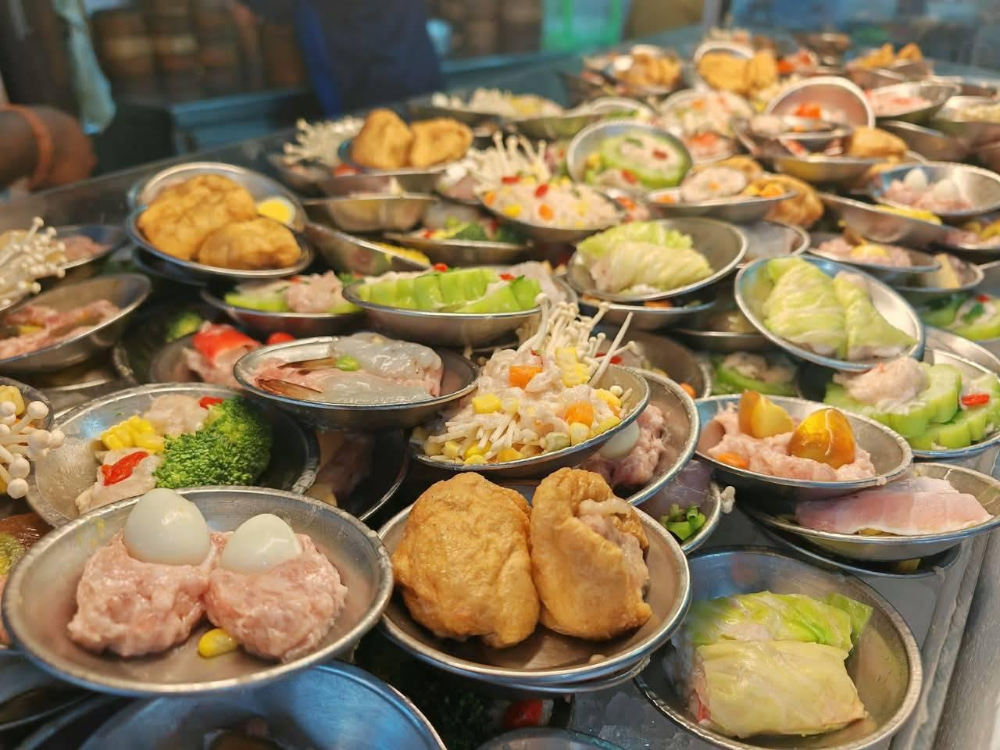

ข้าวสตูหมูเกียดฟั่ง

ถนนนางงาม เมืองเก่าสงขลา นอกจากจะมีอาคารบ้านเรือนสวยงามแล้ว ส้มปอยขอเรียกอีกอย่างว่าเป็นเส้นทางความอร่อยของเมืองสงขลา แต่ละร้านมีประวัติยาวนาน แวะร้านไหนก็อร่อยละมุนลิ้นไปเสียหมด โดยเฉพาะร้านนี้ “เกียดฟั่ง” ที่ถือได้ว่าเป็นตำนานแห่งความอร่อยคู่กับนครในมามากกว่า 80 ปี สตูหมูเกียดฟั่ง เป็นความอร่อยนานาชาติ เป็นจานที่ได้ส่วนผสมทางวัฒนธรรมจาก อังกฤษ อินโดนีเซีย จีน ไทย กลายมาเป็นสตูรสชาติหนึ่งเดียวในไทย น้ำซุปร้อนๆ กึ่งข้น กึ่งใส ได้ความข้นแบบไทยไทยมาจากการผสมกะทิเข้าไป เป็นการประยุกต์ใช้ในภาวะนมและเนยราคาแพง ผสมผสานรสชาติของกระดูกหมูและเครื่องเทศ เลยได้รสชาติแตกต่างจากสตูของเมืองนอก แต่เป็นสตูในแบบไทยไทยที่ยืนหนึ่งในสงขลา คงจะเป็นการฟิวชันของอาหารที่ได้ผลอย่างดีงาม ในชามสตูหมูจะมีทั้งเนื้อหมู ไส้ หมูกรอบ เครื่องใน และเลือด อยากได้ส่วนไหนก็แจ้งได้เลย